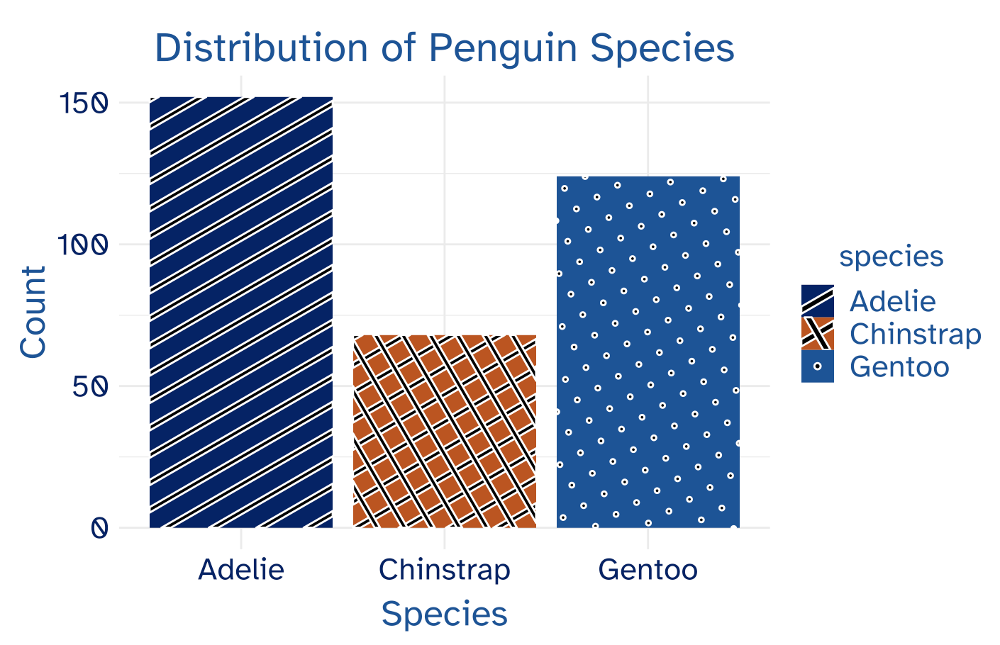

6 Discussion
The duke package allows users to transform their visualizations so that they are simultaneously colorblind friendly and representative of the Duke brand. To achieve this goal, the package incorporates a minimalist thematic design along with a high contrast color scale (both discrete and continuous) for ggplot geometric objects. As explained in the methods section, these functionalities are necessary and efficacious, but only a part of creators’ toolbox for advancing accessibility in data visualization. There are several other best practices in data visualization that can make all the difference for those with color vision deficiency and low vision and should be highlighted.
6.1 Colorblind Accessibility Best Practices
Keep It Simple
The duke package selects a simple thematic design as to not distract from the key takeaways of the data visualization. It is in this vein that you should constantly consider how you can more succinctly convey the insights from your data. While the duke discrete palette allows for up to eight distinct colors, you should always strive to minimize the number of dimensions in your plots. Reducing the number of categories present in your visualizations is not only a best practice for colorblind accessibility. It also allows all users to more effectively differentiate between distinctions in the data and quickly comprehend the primary takeaways.
To reduce plot complexity, ask questions like: What do I need to highlight in the data? What are the primary insights readers should understand? This thought process will reveal what characteristics and/or categories must stand out and allow you to direct your attention on making them clear - especially for colorblind readers. Inversely, you can identify data groups that are insignificant to your goal and combine them into a single category, in turn, eliminating the need for excess colors. By keeping it simple in data visualization, you can be more confident that your audience will both comprehend and appreciate the story of your data visualization.
De-Emphasize the Need for Color
The duke package allows users to integrate a more colorblind friendly palette into their visualizations; however, this is not the end-all solution. There are several other plot features present in ggplot that alleviate the need for the color palette to be perfectly distinguishable - or in some cases - be used at all. Essentially, if you “get it right in black and white”, you no longer have to worry about access issues for colorblind readers (Muth 2020). This can be done by adding, “icons, directional arrows, labels, annotations, or other indicators” that differentiate between different categories (Shaffer 2020).
Here are a few examples of how these supplementary features can improve the accessibility of visualizations using the duke package.
Scatterplots can quickly become difficult to read when there a several distinct categories in the data. To improve your plot’s readability, consider adding shapes to your data points.

For geometric objects with large fill spaces (ie. bar plot, pie chart), the use of the colorblind friendly palettes can be effective on its own. Nevertheless, adding fill textures to your visualization is an effective way to increase plot clarity. To do so, I used the ggpattern package.

Finally, the efficacy of color in line plots deteriorates as the number of categories increases and/or the lines are intersecting. By varying the patterns and widths of the lines in your plot, your visualization can more effectively convey trend differences.

The use of these complimentary features - among many others - are easy and effective. By integrating them alongside the duke package, you can promote accessibility for not only colorblind individuals, but older readers, audiences with lower technical exposure, and people reading in low light.
Adjust When Necessary
The colorblind community is not a monolith, therefore, it is understandable that you may need to adjust your visualizations given the context. The development of the duke package was intended to promote accessibility for the largest possible audience, which is why red-green colorblindness was the primary focus. Some features of duke may not be fitting for you, so adapt them when necessary. For example, text sizing is scaled relative to the plot dimensions in theme_duke(), but it is reasonable that even larger text may be required for audience readability. In this case, engage with the specifications of the theme() function to make sure the text is sufficiently large.
The duke palette offers the most accessible colors within Duke’s official branding guide, but modifying these colors may be needed to perfectly meet WCAG guidelines. If your visualization does not fall within the purview of the Duke official brand, using the the rule light vs. dark can be an effective strategy. Even when colors are similar, readers can typically distinguish between lighter and darker shades. This also to applies the monochromatic palettes which only use different shades of the same color. The Duke brand does not permit color adjustments and therefore the duke package cannot manually incorporate the light vs. dark strategy. However, if colorblind accessibility is your primary emphasis over representing Duke, this can be a successful tool for creating intelligible visualizations.
6.2 Summary
duke empowers users to develop Duke branded and colorblind friendly visualizations and should be used in University communications. By implementing a minimalist thematic design and a high contrast color palette in both continuous and discrete geometric objects, the package is an efficacious tool for data visualization in the Duke community. Nevertheless, it is not the only tool. To further enhance the accessibility of visualizations, users can engage with several complimentary strategies:
Keep It Simple: Identify the most important features of your data and remove those that are unneccessary. Reducing the complexity of the plot will more succinctly convey your data insights.
De-Emphasize Color: Integrate additional indicators in your visualizations (labels, shapes, patterns) to clearly direct the attention of readers. When used effectively, these features can eliminate the need for color differentiation at all.
Adjust When Necessary: Be creative and craft a unique visualization fitting to your needs. By manually adjusting text sizing and color shades, you can ensure the visualization is appropriate for your audience.
The use of the duke package, in tandem with these best practices, will foster a more accessible and inclusive approach to data visualization in the Duke community.